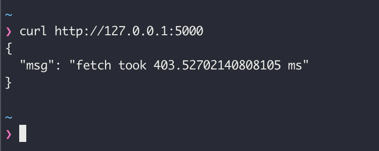

“What is not defined cannot be measured. What is not measured, cannot be improved. What is not improved, is always degraded”. William Thomson Kelvin
In this article, we will learn how to create custom metrics for a simple web application and use Prometheus to collect and report on them.
Site Reliability Engineering üîó
This post is part of a series about Site Reliability Engineering (SRE). In the series, we will talk about different concepts, tools, and techniques to keep a large-scale system healthy. This time we will focus on Monitoring.
Monitoring is one of the pillars of SRE. Having good metrics —by good, we mean meaningful, accurate, and up-to-date metrics— is essential to understand the situation of any system, and to be able to diagnose any problems within it. There is a large body of work on the selection and calculation of relevant metrics. Methodologies like USE, RED, and the Golden Signals, can help you design a simple and effective monitoring strategy. In future articles, we will dive into some of these methods and other good practices.
When tracking system performance, and regardless of the approach we follow, we want to be able to instrument our applications to collect the metrics we need to measure. Some programming languages offer native tools to access real-time information about the state of the run-time environment. The Java Management Extensions (JMX) is a good example. But often, you will want to extend the basic language instrumentation with your metrics. This is where a tool like Prometheus becomes very useful.
Learn more about SRE and Monitoring:
- https://grafana.com/blog/2018/08/02/the-red-method-how-to-instrument-your-services/
- https://cloud.google.com/sre
- https://www.ibm.com/cloud/learn/site-reliability-engineering
Prometheus üîó

The official website defines Prometheus as “an open-source systems monitoring and alerting toolkit originally built at SoundCloud”. Prometheus collects metrics as time series data and offers a query language called PromQL to work with the data. The tool is simple and easy to deploy and operate. It can be used for small and for large-scale systems.
A typical Prometheus solution will include a server that scrapes and stores the data, as well as client libraries ‚Äîin different programming languages‚Äî that produce the metrics within the applications. Optionally, an alertmanager service can take care of alerts and notifications. When the instrumentation from within the application is not possible ‚Äîif we don’t have access to the source code‚Äî Prometheus can use exporters to collect information.
Metrics üîó
Prometheus stores all data as time series data. Every time series is defined by a metric name, and optionally some labels. The metric name defines a system attribute —total memory used, for example— and the labels are used to define different dimensions: the specific instance or a specific system component, for example.
Prometheus supports different types of metrics. Counters, are used to measure metrics that can only increase or be reset to zero —e.g. http_requests_total—. Gauge metrics are used for values that can increase or decrease over time —e.g. http_requests_processing_time—. Other more sophisticated types include the Histogram, and the Summary observations. To learn more about the Prometheus metrics model: https://prometheus.io/docs/concepts/metric_types/
click to zoom in
Client Libraries üîó
There are Prometheus client libraries for almost every major programming language: https://prometheus.io/docs/instrumenting/clientlibs. Some are officially supported, like the ones for Go, Python, Java, Ruby, and Rust; others are provided by third-party open-source developers. Finally, if no library suits your needs, you can implement your own following the standard conventions.
Instrumenting an Application üîó
It is time to put these concepts into practice. A simple exercise will take us through the basic concepts:
- Take a small Python web application and add a few custom metrics using the Prometheus client library.
- Set up a local Prometheus server to collect the data.
- Use the Prometheus UI to work with the metrics.
If you are in a hurry, here is github repo with a nice Docker Compose setup and the final code for this exercise
Download CodeExample web application üîó
Let’s begin our exercise with a very simple HTTP application based on Flask: metrics.py. This application has only one endpoint that fetches some remote content and responds with the time it took to retrieve the data. The application code looks like this:
from flask import Flask, jsonify, request
import http.client
import time
app = Flask(__name__)
def fetchSomething():
connection = http.client.HTTPSConnection("httpbin.org")
connection.request("GET", "/anything")
response = connection.getresponse()
print("Status: {} and reason: {}".format(response.status, response.reason))
connection.close()
@app.route('/', methods = ['GET'])
def home():
if(request.method == 'GET'):
# do something and record time
start = time.time()
fetchSomething()
end = time.time()
t = (end - start)*1000
data = f"fetch took {t} ms"
return jsonify({'msg': data})
# run
if __name__ == '__main__':
app.run(debug = True)
Running the application
click to zoom in
Testing the application
Instrumentation üîó
Now that we have a working sample application, let’s add some instrumentation with Prometheus. As we discussed before, Prometheus offers client libraries for the major programming languages. The Prometheus client for Python can be found here: https://github.com/prometheus/client_python
Adding Prometheus takes two steps:
- Including the necessary libraries
- Expose the
/metricsHTTP endpoint for the Prometheus scraper
Install the Prometheus Client Library:
pip3 install prometheus-client
Also, install a helper library (Werkzeug) to expose the /metrics endpoint through Flask:
pip3 install Werkzeug
Now we can add the code to enable Prometheus in our application:
# Import the Prometheus client library and flask helper.
from prometheus_client import make_wsgi_app
from werkzeug.middleware.dispatcher import DispatcherMiddleware
# Add Prometheus WSGI middleware to route /metrics requests
app.wsgi_app = DispatcherMiddleware(app.wsgi_app, {
'/metrics': make_wsgi_app()
})
The complete code now looks like this:
from flask import Flask, jsonify, request
import http.client
import time
# Import the Prometheus client library and flask helper.
from prometheus_client import make_wsgi_app
from werkzeug.middleware.dispatcher import DispatcherMiddleware
app = Flask(__name__)
# Add Prometheus WSGI middleware to route /metrics requests
app.wsgi_app = DispatcherMiddleware(app.wsgi_app, {
'/metrics': make_wsgi_app()
})
def fetchSomething():
connection = http.client.HTTPSConnection("httpbin.org")
connection.request("GET", "/anything")
response = connection.getresponse()
print("Status: {} and reason: {}".format(response.status, response.reason))
connection.close()
@app.route('/', methods = ['GET'])
def home():
if(request.method == 'GET'):
# do something and record time
start = time.time()
fetchSomething()
end = time.time()
t = (end - start)*1000
data = f"fetch took {t} ms"
return jsonify({'msg': data})
# driver function
if __name__ == '__main__':
app.run(debug = True)
We can test the new /metrics endpoint and confirm that it is working. Prometheus automatically collects a few metrics about the application run time environment:
 click to zoom in
click to zoom in
Metrics üîó
Once we have Prometheus included in our application it is time to add the custom metrics we care about.
We will add a Counter for the number of requests to the application and a Gauge to track the time it takes to fetch the remote content.
# add the metrics classes
from prometheus_client import Counter, Gauge
# Define the metrics: one counter and one gauge
# HELP requests_total Count of requests
# TYPE requests_total counter
requests_counter = Counter('requests', 'Count of requests')
# HELP fetch_time_ms Time to fetch in milliseconds
# TYPE fetch_time_ms gauge
fetch_time_ms = Gauge('fetch_time_ms', 'Time to fetch in milliseconds')
Every time we need to increment our request counter, we call:
# increment the request counter
requests_counter.inc()
And every time we need to update the time gauge, we do:
# set the metric value to the time elapsed
fetch_time_ms.set(t)
Now the application code looks like this, pay attention to the new body of the home() method:
from flask import Flask, jsonify, request
import http.client
import time
from werkzeug.middleware.dispatcher import DispatcherMiddleware
from prometheus_client import make_wsgi_app
from prometheus_client import Counter, Gauge
# Metrics definition
# HELP requests_total Count of requests
# TYPE requests_total counter
requests_counter = Counter('requests', 'Count of requests')
# HELP fetch_time_ms Time to fetch in milliseconds
# TYPE fetch_time_ms gauge
fetch_time_ms = Gauge('fetch_time_ms', 'Time to fetch in milliseconds')
app = Flask(__name__)
# Add Prometheus WSGI middleware to route /metrics requests
app.wsgi_app = DispatcherMiddleware(app.wsgi_app, {
'/metrics': make_wsgi_app()
})
def fetchSomething():
connection = http.client.HTTPSConnection("httpbin.org")
connection.request("GET", "/anything")
response = connection.getresponse()
print("Status: {} and reason: {}".format(response.status, response.reason))
connection.close()
@app.route('/', methods = ['GET'])
def home():
if(request.method == 'GET'):
# increment the request counter
requests_counter.inc()
# do something and record time
start = time.time()
fetchSomething()
end = time.time()
t = (end - start)*1000
# set the metric value to the time elapsed
fetch_time_ms.set(t)
data = f"fetch took {t} ms"
return jsonify({'msg': data})
# driver function
if __name__ == '__main__':
app.run(debug = True)
Now, when we call our application and query the /metrics endpoint we can see the new indicators:
click to zoom in
Setup Prometheus service üîó
It is time to launch a Prometheus service to collect our metrics.
There are many ways to install Prometheus, we will use Docker for our exercise.
docker run \
-p 9090:9090 \
-v /path/to/prometheus.yml:/etc/prometheus/prometheus.yml \
prom/prometheus
Regardless of how you are running the service, you need to prepare the configuration file to scrape the metrics from our application. In it, we need to define a Job to scrape the metrics from our application.
This is a very simple configuration file:
# my global config
global:
scrape_interval: 15s # Set the scrape interval to every 15 seconds. Default is every 1 minute.
evaluation_interval: 15s # Evaluate rules every 15 seconds. The default is every 1 minute.
# scrape_timeout is set to the global default (10s).
external_labels:
dc: sre1
# A scrape configuration containing two endpoints to scrape:
scrape_configs:
# The job name is added as a label `job=<job_name>` to any time series scraped from this config.
# Here it's Prometheus itself.
- job_name: 'prometheus'
static_configs:
- targets: ['localhost:9090']
# Scrape our Sample application's host:port
- job_name: 'pythonapp'
static_configs:
- targets: ['docker.for.mac.host.internal:5000']
We do not include the
/metricspath in the target since it is assumed by Prometheus. Because we are running Prometheus inside Docker for macOS, we need to use the host aliasdocker.for.mac.host.internalto access the application.
For more configuration options read the official documentation: https://prometheus.io/docs/prometheus/latest/configuration/configuration/
Starting the service with Docker:
click to zoom in
Opening the Prometheus Web UI at http://localhost:9090
click to zoom in
Working with Metrics üîó
You can explore, calculate, and graph the different metrics through the Prometheus web UI. The UI includes a handy metrics explorer that simplifies working with the directory of available data.
click to zoom in
Prometheus offers a rich querying language called PromQL that allows you to work with the metrics in different dimensions. You can find detailed documentation on PromQL on the official website: https://prometheus.io/docs/prometheus/latest/querying/basics/. Right now we will focus on a couple of basic queries to inspect the state of our application:
Simple metric selection. Shows the value for a particular metric, filtered by a set of labels assigned by Prometheus.
metric{label=val, label=val,...}
Rate of change of a metric. Typically used for simple counters when the velocity of change is more relevant than the value itself.
rate(metric{label=val, label=val,...}[time period])
Let’s look at the metrics from our application:
The time it took to fetch remote content
fetch_time_ms{job="pythonapp"}
click to zoom in
Notice the label
job, equal to the “job_name” value we gave to the scrapping target in the configuration file. The second labelinstanceis equal to the source host of the metrics. These labels are automatically assigned by Prometheus.
Total Number of Requests
requests_total{job="pythonapp"}
click to zoom in
Rate of Requests (RPS) for a 5m interval
rate(requests_total{job="pythonapp"}[5m])
click to zoom in
Up üîó
Up is a special metric that Prometheus creates automatically for every target. If it is possible to assume that when the /metrics endpoint is accessible the entire application is running, then you get a free heartbeat signal by plugin Prometheus into it.
click to zoom in
Where to go from here? üîó
Hopefully, after this exercise, you should be able to instrument your application with basic metrics. The same pattern applies to other languages. Give it a try following the guides from the client repositories.
We have just scratched the surface of what Prometheus has to offer as a monitoring solution. If you liked what you saw so far, go and take a look at the official documentation on other components. Other posts in this series will touch on other Prometheus features like Exporters, the AlertManager, Custom Metric Rules, as well as SRE concepts like Metrics best practices, and the use of Grafana for metrics visualization.